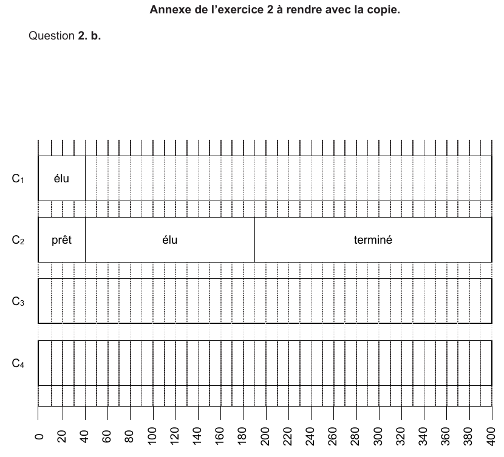

Gestionnaire graphique de processus
Utiliser le gestionnaire de processus par défaut de votre système d’exploitation pour répondre aux questions suivantes:
- Ouvrir le navigateur web. Combien de processus sont créés? Noter son(ses) PID(identifiant de processus) et PPID(identifiant du processus parent).
- Ouvrir des nouveaux onglets(CTRL+T). De nouveaux processus sont-ils créés?
- Ouvrir des nouvelles fenêtres de navigateur(CTRL+N). De nouveaux processus sont-ils créés?
- Fermer puis réouvrir le navigateur. Les PID et PPID ont-ils changés?
Remonter un arbre de processus
Lancer l’émulateur de console linux disponible à l’adresse suivante:
Le page de manuel de la commande ps est disponible à l’adresse suivante: https://www.man7.org/linux/man-pages/man1/ps.1.html
- Lancer la commande
ps -o pid,ppid,user,stat,commet noter son PID(identifiant de processus) et PPID(identifiant du processus parent). - Reprendre le même travail pour le processus parent jusqu’à remonter au processus racine.
- Refermer le terminal, puis recommencer. Que constate-t-on?
Si vous n’avez pas accès à une console Linux, travailler sur cette sortie:
[ben@archben ~]$ ps -aef
UID PID PPID C STIME TTY TIME CMD
root 1 0 0 15:28 ? 00:00:00 /sbin/init
root 2 0 0 15:28 ? 00:00:00 [kthreadd]
root 3 2 0 15:28 ? 00:00:00 [rcu_gp]
root 4 2 0 15:28 ? 00:00:00 [rcu_par_gp]
root 6 2 0 15:28 ? 00:00:00 [kworker/0:0H-events_highpri]
root 8 2 0 15:28 ? 00:00:00 [mm_percpu_wq]
root 10 2 0 15:28 ? 00:00:00 [rcu_tasks_kthre]
root 11 2 0 15:28 ? 00:00:00 [rcu_tasks_rude_]
root 12 2 0 15:28 ? 00:00:00 [rcu_tasks_trace]
root 13 2 0 15:28 ? 00:00:00 [ksoftirqd/0]
root 14 2 0 15:28 ? 00:00:01 [rcu_preempt]
root 15 2 0 15:28 ? 00:00:00 [rcub/0]
root 16 2 0 15:28 ? 00:00:00 [rcuc/0]
root 17 2 0 15:28 ? 00:00:00 [migration/0]
root 18 2 0 15:28 ? 00:00:00 [idle_inject/0]
root 20 2 0 15:28 ? 00:00:00 [cpuhp/0]
root 21 2 0 15:28 ? 00:00:00 [cpuhp/1]
root 22 2 0 15:28 ? 00:00:00 [idle_inject/1]
root 23 2 0 15:28 ? 00:00:00 [migration/1]
root 24 2 0 15:28 ? 00:00:00 [rcuc/1]
root 25 2 0 15:28 ? 00:00:03 [ksoftirqd/1]
root 27 2 0 15:28 ? 00:00:00 [kworker/1:0H-events_highpri]
root 28 2 0 15:28 ? 00:00:00 [cpuhp/2]
root 29 2 0 15:28 ? 00:00:00 [idle_inject/2]
root 30 2 0 15:28 ? 00:00:00 [migration/2]
root 31 2 0 15:28 ? 00:00:00 [rcuc/2]
root 32 2 0 15:28 ? 00:00:00 [ksoftirqd/2]
root 34 2 0 15:28 ? 00:00:00 [kworker/2:0H-kblockd]
root 35 2 0 15:28 ? 00:00:00 [cpuhp/3]
root 36 2 0 15:28 ? 00:00:00 [idle_inject/3]
root 37 2 0 15:28 ? 00:00:00 [migration/3]
root 38 2 0 15:28 ? 00:00:00 [rcuc/3]
root 39 2 0 15:28 ? 00:00:00 [ksoftirqd/3]
root 41 2 0 15:28 ? 00:00:00 [kworker/3:0H-events_highpri]
root 42 2 0 15:28 ? 00:00:00 [kdevtmpfs]
root 43 2 0 15:28 ? 00:00:00 [netns]
root 44 2 0 15:28 ? 00:00:00 [inet_frag_wq]
root 45 2 0 15:28 ? 00:00:00 [kauditd]
root 46 2 0 15:28 ? 00:00:00 [khungtaskd]
root 47 2 0 15:28 ? 00:00:00 [oom_reaper]
root 48 2 0 15:28 ? 00:00:00 [writeback]
root 49 2 0 15:28 ? 00:00:00 [kcompactd0]
root 50 2 0 15:28 ? 00:00:00 [ksmd]
root 51 2 0 15:28 ? 00:00:00 [khugepaged]
root 95 2 0 15:28 ? 00:00:00 [kintegrityd]
root 96 2 0 15:28 ? 00:00:00 [kblockd]
root 97 2 0 15:28 ? 00:00:00 [blkcg_punt_bio]
root 98 2 0 15:28 ? 00:00:00 [ata_sff]
root 99 2 0 15:28 ? 00:00:00 [edac-poller]
root 100 2 0 15:28 ? 00:00:00 [devfreq_wq]
root 101 2 0 15:28 ? 00:00:00 [watchdogd]
root 102 2 0 15:28 ? 00:00:00 [kworker/0:1H-events_highpri]
root 104 2 0 15:28 ? 00:00:00 [kswapd0]
root 106 2 0 15:28 ? 00:00:00 [kthrotld]
root 107 2 0 15:28 ? 00:00:00 [irq/123-aerdrv]
root 108 2 0 15:28 ? 00:00:00 [acpi_thermal_pm]
root 110 2 0 15:28 ? 00:00:00 [nvme-wq]
root 111 2 0 15:28 ? 00:00:00 [nvme-reset-wq]
root 112 2 0 15:28 ? 00:00:00 [nvme-delete-wq]
root 113 2 0 15:28 ? 00:00:00 [scsi_eh_0]
root 114 2 0 15:28 ? 00:00:00 [scsi_tmf_0]
root 115 2 0 15:28 ? 00:00:00 [scsi_eh_1]
root 116 2 0 15:28 ? 00:00:00 [scsi_tmf_1]
root 117 2 0 15:28 ? 00:00:00 [scsi_eh_2]
root 118 2 0 15:28 ? 00:00:00 [scsi_tmf_2]
root 119 2 0 15:28 ? 00:00:00 [scsi_eh_3]
root 120 2 0 15:28 ? 00:00:00 [scsi_tmf_3]
root 121 2 0 15:28 ? 00:00:00 [scsi_eh_4]
root 122 2 0 15:28 ? 00:00:00 [scsi_tmf_4]
root 123 2 0 15:28 ? 00:00:00 [scsi_eh_5]
root 124 2 0 15:28 ? 00:00:00 [scsi_tmf_5]
root 130 2 0 15:28 ? 00:00:00 [mld]
root 131 2 0 15:28 ? 00:00:00 [ipv6_addrconf]
root 134 2 0 15:28 ? 00:00:00 [kworker/3:1H-events_highpri]
root 143 2 0 15:28 ? 00:00:00 [kstrp]
root 144 2 0 15:28 ? 00:00:00 [zswap1]
root 145 2 0 15:28 ? 00:00:00 [zswap1]
root 146 2 0 15:28 ? 00:00:00 [zswap-shrink]
root 147 2 0 15:28 ? 00:00:07 [kworker/u9:0-i915_flip]
root 148 2 0 15:28 ? 00:00:00 [charger_manager]
root 149 2 0 15:28 ? 00:00:00 [kworker/2:1H-events_highpri]
root 189 2 0 15:28 ? 00:00:08 [kworker/1:2-events]
root 193 2 0 15:28 ? 00:00:00 [kworker/1:1H-events_highpri]
root 202 2 0 15:28 ? 00:00:00 [jbd2/sda2-8]
root 203 2 0 15:28 ? 00:00:00 [ext4-rsv-conver]
root 211 2 0 15:28 ? 00:00:00 [kworker/0:2-events]
root 240 1 0 15:28 ? 00:00:00 /usr/lib/systemd/systemd-journald
root 254 2 0 15:28 ? 00:00:00 [iprt-VBoxWQueue]
root 255 2 0 15:28 ? 00:00:00 [iprt-VBoxTscThr]
root 257 1 0 15:28 ? 00:00:00 /usr/lib/systemd/systemd-udevd
root 292 2 0 15:28 ? 00:00:00 [irq/132-mei_me]
root 313 2 0 15:28 ? 00:00:00 [jbd2/sda4-8]
root 314 2 0 15:28 ? 00:00:00 [ext4-rsv-conver]
root 351 2 0 15:28 ? 00:00:00 [card0-crtc0]
root 352 2 0 15:28 ? 00:00:00 [card0-crtc1]
root 353 2 0 15:28 ? 00:00:00 [card0-crtc2]
root 354 2 0 15:28 ? 00:00:00 [jbd2/sdb1-8]
root 356 2 0 15:28 ? 00:00:00 [ext4-rsv-conver]
root 366 2 0 15:28 ? 00:00:00 [cryptd]
root 409 2 0 15:28 ? 00:00:00 [nvkm-disp]
root 411 2 0 15:28 ? 00:00:00 [scsi_eh_6]
root 412 2 0 15:28 ? 00:00:00 [scsi_tmf_6]
root 413 2 0 15:28 ? 00:00:00 [usb-storage]
dbus 417 1 0 15:28 ? 00:00:03 /usr/bin/dbus-daemon --system --address=systemd: --nofork --nopi
root 418 1 0 15:28 ? 00:00:03 /usr/bin/NetworkManager --no-daemon
root 419 1 0 15:28 ? 00:00:00 /usr/lib/systemd/systemd-logind
root 424 2 0 15:28 ? 00:00:00 [uas]
root 425 2 0 15:28 ? 00:00:00 [led_workqueue]
root 426 2 0 15:28 ? 00:00:00 [kworker/2:3-events]
root 432 1 0 15:28 ? 00:00:00 /usr/bin/cupsd -l
ntp 438 1 0 15:28 ? 00:00:00 /usr/bin/ntpd -g -u ntp:ntp
root 439 1 0 15:28 ? 00:00:00 /usr/bin/sddm
colord 480 1 0 15:28 ? 00:00:00 /usr/lib/colord
mysql 483 1 0 15:28 ? 00:00:00 /usr/bin/mariadbd
root 491 1 0 15:28 ? 00:00:00 /usr/bin/ifplugd -i enp0s31f6 -r /etc/ifplugd/netctl.action -d 0
root 504 2 0 15:28 ? 00:00:00 [card1-crtc0]
root 505 2 0 15:28 ? 00:00:00 [card1-crtc1]
root 506 2 0 15:28 ? 00:00:00 [card1-crtc2]
root 507 2 0 15:28 ? 00:00:00 [card1-crtc3]
root 845 439 15 15:28 tty1 00:07:39 /usr/lib/Xorg -nolisten tcp -background none -seat seat0 vt1 -au
polkitd 1126 1 0 15:28 ? 00:00:00 /usr/lib/polkit-1/polkitd --no-debug
root 1127 1 0 15:28 ? 00:00:00 /usr/lib/udisks2/udisksd
root 1250 1 0 15:28 ? 00:00:00 /usr/lib/upowerd
root 5329 439 0 15:30 ? 00:00:00 /usr/lib/sddm/sddm-helper --socket /tmp/sddm-auth7882d9d1-7181-4
ben 5331 1 0 15:30 ? 00:00:00 /usr/lib/systemd/systemd --user
ben 5332 5331 0 15:30 ? 00:00:00 (sd-pam)
ben 5341 5331 0 15:30 ? 00:00:00 /usr/bin/ssh-agent -a /run/user/1000/ssh-agent.socket
ben 5344 1 0 15:30 ? 00:00:00 /usr/bin/kwalletd5 --pam-login 7 8
ben 5345 5329 0 15:30 ? 00:00:00 /usr/bin/startplasma-x11
ben 5351 5331 0 15:30 ? 00:00:02 /usr/bin/dbus-daemon --session --address=systemd: --nofork --nop
ben 5376 1 0 15:30 ? 00:00:00 /usr/lib/kf5/start_kdeinit
ben 5377 1 0 15:30 ? 00:00:00 kdeinit5: Running...
ben 5380 5377 0 15:30 ? 00:00:00 /usr/lib/kf5/klauncher --fd=9
ben 5393 1 0 15:30 ? 00:00:02 /usr/bin/kded5
ben 5397 1 12 15:30 ? 00:05:49 /usr/bin/kwin_x11
ben 5407 5331 0 15:30 ? 00:00:00 /usr/lib/dconf-service
ben 5422 1 0 15:30 ? 00:00:00 /usr/bin/ksmserver
ben 5423 5331 0 15:30 ? 00:00:00 /usr/bin/kglobalaccel5
ben 5424 5331 0 15:30 ? 00:00:00 /usr/lib/kactivitymanagerd
ben 5443 1 0 15:30 ? 00:00:00 /usr/lib/org_kde_powerdevil
ben 5445 1 0 15:30 ? 00:00:00 /usr/bin/kaccess
ben 5453 1 0 15:30 ? 00:00:24 /usr/bin/plasmashell
ben 5455 1 0 15:30 ? 00:00:00 /usr/bin/xembedsniproxy
ben 5458 1 0 15:30 ? 00:00:00 /usr/lib/polkit-kde-authentication-agent-1
ben 5471 1 0 15:30 ? 00:00:00 /usr/bin/gmenudbusmenuproxy
ben 5474 1 0 15:30 ? 00:00:00 /usr/lib/kdeconnectd
ben 5480 5331 0 15:30 ? 00:00:02 /usr/lib/telepathy/mission-control-5
ben 5496 1 0 15:30 ? 00:00:00 /usr/lib/DiscoverNotifier
ben 5497 5331 4 15:30 ? 00:02:17 /usr/bin/pulseaudio --daemonize=no --log-target=journal
rtkit 5509 1 0 15:30 ? 00:00:00 /usr/lib/rtkit-daemon
ben 5535 5422 0 15:30 ? 00:00:00 /usr/bin/korgac -session 10c3d7d168000157668832400000005170010_1
ben 5550 5331 0 15:30 ? 00:00:00 /usr/lib/bluetooth/obexd
ben 5562 5331 0 15:30 ? 00:00:00 /usr/lib/kf5/kscreen_backend_launcher
ben 5571 5422 0 15:30 ? 00:00:00 /usr/bin/kmix -session 10c3d7d168000159220324600000006650006_163
ben 5574 5331 0 15:30 ? 00:00:06 /usr/bin/ksystemstats
ben 5579 1 0 15:30 ? 00:00:00 /usr/bin/akonadi_control
ben 5583 5422 0 15:30 ? 00:00:01 /usr/bin/ktorrent -session 10c3d7d168000161495567300000034780020
ben 5586 5579 0 15:30 ? 00:00:14 /usr/bin/akonadiserver
ben 5596 5586 0 15:30 ? 00:00:15 /usr/bin/mysqld --defaults-file=/home/ben/.local/share/akonadi/m
ben 5606 5422 0 15:30 ? 00:00:05 /usr/bin/nextcloud -session 10c3d7d16800016275863140000002807001
ben 5644 5422 0 15:30 ? 00:00:00 /usr/bin/kgpg -session 10c3d7d168000163752270100000007410035_163
ben 5650 5497 0 15:30 ? 00:00:00 /usr/lib/pulse/gsettings-helper
ben 5668 5579 0 15:30 ? 00:00:00 /usr/bin/akonadi_akonotes_resource --identifier akonadi_akonotes
ben 5670 5579 0 15:30 ? 00:00:00 /usr/bin/akonadi_archivemail_agent --identifier akonadi_archivem
ben 5672 5579 0 15:30 ? 00:00:00 /usr/bin/akonadi_birthdays_resource --identifier akonadi_birthda
ben 5673 5579 0 15:30 ? 00:00:00 /usr/bin/akonadi_contacts_resource --identifier akonadi_contacts
ben 5674 5579 0 15:30 ? 00:00:00 /usr/bin/akonadi_davgroupware_resource --identifier akonadi_davg
ben 5675 5579 0 15:30 ? 00:00:00 /usr/bin/akonadi_followupreminder_agent --identifier akonadi_fol
ben 5679 5579 0 15:30 ? 00:00:00 /usr/bin/akonadi_ical_resource --identifier akonadi_ical_resourc
ben 5682 5579 0 15:30 ? 00:00:00 /usr/bin/akonadi_imap_resource --identifier akonadi_imap_resourc
ben 5687 5579 1 15:30 ? 00:00:36 /usr/bin/akonadi_imap_resource --identifier akonadi_imap_resourc
ben 5692 5579 0 15:30 ? 00:00:00 /usr/bin/akonadi_imap_resource --identifier akonadi_imap_resourc
ben 5695 5579 0 15:30 ? 00:00:00 /usr/bin/akonadi_imap_resource --identifier akonadi_imap_resourc
ben 5699 5579 0 15:30 ? 00:00:00 /usr/bin/akonadi_imap_resource --identifier akonadi_imap_resourc
ben 5702 5579 0 15:30 ? 00:00:00 /usr/bin/akonadi_indexing_agent --identifier akonadi_indexing_ag
ben 5705 5579 0 15:30 ? 00:00:00 /usr/bin/akonadi_maildir_resource --identifier akonadi_maildir_r
ben 5711 5579 0 15:30 ? 00:00:00 /usr/bin/akonadi_maildispatcher_agent --identifier akonadi_maild
ben 5712 5579 0 15:30 ? 00:00:00 /usr/bin/akonadi_mailfilter_agent --identifier akonadi_mailfilte
ben 5714 5579 0 15:30 ? 00:00:00 /usr/bin/akonadi_mailmerge_agent --identifier akonadi_mailmerge_
ben 5719 5579 0 15:30 ? 00:00:00 /usr/bin/akonadi_migration_agent --identifier akonadi_migration_
ben 5720 5579 0 15:30 ? 00:00:00 /usr/bin/akonadi_newmailnotifier_agent --identifier akonadi_newm
ben 5723 5579 0 15:30 ? 00:00:00 /usr/bin/akonadi_notes_agent --identifier akonadi_notes_agent
ben 5729 5579 0 15:30 ? 00:00:00 /usr/bin/akonadi_sendlater_agent --identifier akonadi_sendlater_
ben 5732 5422 99 15:30 ? 00:55:18 /usr/lib/firefox/firefox --sm-client-id 10c3d7d16800016383908030
ben 5738 5579 0 15:30 ? 00:00:00 /usr/bin/akonadi_unifiedmailbox_agent --identifier akonadi_unifi
ben 5743 5331 0 15:30 ? 00:00:00 /usr/lib/kf5/kiod5
ben 5752 5331 0 15:30 ? 00:00:00 /usr/bin/gpg-agent --supervised
ben 5991 5331 0 15:30 ? 00:00:00 /usr/lib/at-spi-bus-launcher
ben 6005 5732 4 15:30 ? 00:02:16 /usr/lib/firefox/firefox -contentproc -parentBuildID 20211121002
ben 6076 5732 1 15:30 ? 00:00:48 /usr/lib/firefox/firefox -contentproc -childID 1 -isForBrowser -
ben 6144 5732 0 15:30 ? 00:00:02 /usr/lib/firefox/firefox -contentproc -childID 2 -isForBrowser -
ben 6162 5732 1 15:30 ? 00:00:47 /usr/lib/firefox/firefox -contentproc -childID 3 -isForBrowser -
ben 6270 5732 0 15:30 ? 00:00:01 /usr/bin/plasma-browser-integration-host /usr/lib/mozilla/native
ben 6384 5732 0 15:30 ? 00:00:00 /usr/lib/firefox/firefox -contentproc -parentBuildID 20211121002
root 6403 2 0 15:30 ? 00:00:00 [cifsiod]
root 6404 2 0 15:30 ? 00:00:00 [smb3decryptd]
root 6405 2 0 15:30 ? 00:00:00 [cifsfileinfoput]
root 6406 2 0 15:30 ? 00:00:00 [cifsoplockd]
root 6407 2 0 15:30 ? 00:00:00 [deferredclose]
root 6410 2 0 15:30 ? 00:00:00 [cifsd]
ben 6451 1 0 15:30 ? 00:00:00 /usr/bin/kalarm --tray
ben 6461 1 0 15:31 ? 00:00:00 /usr/lib/kf5/kioslave5 /usr/lib/qt/plugins/kf5/kio/kio_file.so f
ben 6463 1 0 15:31 ? 00:00:00 /usr/lib/kf5/kioslave5 /usr/lib/qt/plugins/kf5/kio/kio_file.so f
ben 6479 5453 0 15:33 ? 00:00:06 /usr/bin/kmail -qwindowtitle KMail
ben 6509 6479 0 15:33 ? 00:00:00 /usr/lib/qt/libexec/QtWebEngineProcess --type=zygote --no-zygote
ben 6510 6479 0 15:33 ? 00:00:00 /usr/lib/qt/libexec/QtWebEngineProcess --type=zygote --disable-i
ben 6512 6510 0 15:33 ? 00:00:00 /usr/lib/qt/libexec/QtWebEngineProcess --type=zygote --disable-i
ben 6531 6479 0 15:33 ? 00:00:00 /usr/lib/qt/libexec/QtWebEngineProcess --type=utility --utility-
ben 6532 6512 0 15:33 ? 00:00:01 /usr/lib/qt/libexec/QtWebEngineProcess --type=renderer --disable
ben 6645 5732 31 15:33 ? 00:13:30 /usr/lib/firefox/firefox -contentproc -childID 5 -isForBrowser -
ben 6673 6512 0 15:34 ? 00:00:00 /usr/lib/qt/libexec/QtWebEngineProcess --type=renderer --disable
ben 6710 5732 42 15:34 ? 00:18:05 /usr/lib/firefox/firefox -contentproc -childID 6 -isForBrowser -
ben 6840 5732 0 15:35 ? 00:00:05 /usr/lib/firefox/firefox -contentproc -childID 7 -isForBrowser -
root 7137 2 0 15:43 ? 00:00:00 [kworker/3:2-events]
ben 7244 5732 0 15:45 ? 00:00:00 /usr/lib/firefox/firefox -contentproc -childID 9 -isForBrowser -
root 7499 2 0 15:54 ? 00:00:00 [kworker/u8:0-events_unbound]
root 7513 2 0 15:54 ? 00:00:02 [kworker/u9:1-i915_flip]
root 7560 2 0 15:56 ? 00:00:00 [kworker/u8:1-flush-8:0]
root 7776 2 0 16:05 ? 00:00:00 [kworker/u8:2-i915]
root 7791 2 0 16:07 ? 00:00:00 [kworker/2:1-events]
root 7792 2 0 16:07 ? 00:00:00 [kworker/0:0-events]
root 7827 2 0 16:09 ? 00:00:01 [kworker/1:1-events]
root 7846 2 0 16:09 ? 00:00:00 [scsi_eh_7]
root 7847 2 0 16:09 ? 00:00:00 [scsi_tmf_7]
root 7849 2 0 16:09 ? 00:00:00 [usb-storage]
root 7878 2 0 16:09 ? 00:00:00 [kworker/3:1-events]
ben 7892 1 0 16:09 ? 00:00:01 /usr/bin/dolphin /run/media/ben/USB-ABEL
ben 7903 7892 0 16:09 pts/1 00:00:00 /bin/bash
ben 7921 1 0 16:09 ? 00:00:00 /usr/lib/kf5/kioslave5 /usr/lib/qt/plugins/kf5/kio/kio_file.so f
ben 7923 1 0 16:09 ? 00:00:00 /usr/lib/kf5/kioslave5 /usr/lib/qt/plugins/kf5/kio/kio_file.so f
root 8016 2 0 16:12 ? 00:00:00 [kworker/u8:3-events_unbound]
root 8053 2 0 16:13 ? 00:00:00 [kworker/2:0-events]
root 8065 2 0 16:13 ? 00:00:00 [kworker/u9:2-i915_flip]
ben 8149 5393 5 16:16 ? 00:00:00 /usr/bin/konsole
ben 8157 8149 0 16:16 pts/2 00:00:00 /bin/bash
ben 8161 8157 0 16:16 pts/2 00:00:00 ps -aef
Révisions de première
Ouvrir le cours sur les systèmes d’exploitation de première pour revoir et utiliser les diverses commandes de base:
- Où suis-je?
pwd - Naviguer dans le système de fichiers
lsetcd - Connaître les droits sur les fichiers
ls -l - Gérer les droits avec
chmod - Gérer les propriétaires avec
chown
Exercice type BAC
Cet exercice est l’exercice n°2 du sujet n°2 du BAC 2021 métropole en candidat libre.
Les états possibles d’un processus sont : prêt, élu, terminé et bloqué.
Expliquer à quoi correspond l’état élu.
Proposer un schéma illustrant les passages entre les différents états.
On suppose que quatre processus C₁, C₂, C₃ et C₄ sont créés sur un ordinateur, et qu’aucun autre processus n’est lancé sur celui-ci, ni préalablement ni pendant l’exécution des quatre processus.
L’ordonnanceur, pour exécuter les différents processus prêts, les place dans une structure de données de type file. Un processus prêt est enfilé et un processus élu est défilé.
Parmi les propositions suivantes, recopier celle qui décrit le fonctionnement des entrées/sorties dans une file :
- Premier entré, dernier sorti
- Premier entré, premier sorti
- Dernier entré, premier sorti
On suppose que les quatre processus arrivent dans la file et y sont placés dans l’ordre C₁, C₂, C₃ et C₄.
Les temps d’exécution totaux de C₁, C₂, C₃ et C₄ sont respectivement 100 ms, 150 ms, 80 ms et 60 ms.
Après 40 ms d’exécution, le processus C₁ demande une opération d’écriture disque, opération qui dure 200 ms. Pendant cette opération d’écriture, le processus C₁ passe à l’état bloqué.
Après 20 ms d’exécution, le processus C₃ demande une opération d’écriture disque, opération qui dure 10 ms. Pendant cette opération d’écriture, le processus C₃ passe à l’état bloqué.
Sur la frise chronologique donnée en annexe (à rendre avec la copie), les états du processus C₂ sont donnés. Compléter la frise avec les états des processus C₁, C₃ et C₄.

Annexe de l’exercice 2
On trouvera ci-dessous deux programmes rédigés en pseudo-code.
Verrouiller un fichier signifie que le programme demande un accès exclusif au fichier et l’obtient si le fichier est disponible.
Programme 1 Programme 2 Verrouiller fichier_1 Verrouiller fichier_2 Calculs sur fichier_1 Verrouiller fichier_1 Verrouiller fichier_2 Calculs sur fichier_1 Calculs sur fichier_1 Calculs sur fichier_2 Calculs sur fichier_2 Déverrouiller fichier_1 Calculs sur fichier_1 Déverrouiller fichier_2 Déverrouiller fichier_2 Déverrouiller fichier_1 En supposant que les processus correspondant à ces programmes s’exécutent simultanément (exécution concurrente), expliquer le problème qui peut être rencontré.
Proposer une modification du programme 2 permettant d’éviter ce problème.
Exercice type BAC
Cet exercice est la première partie de l’exercice 3 du sujet 1 candidat libre Métropole 2021.
La commande UNIX ps présente un cliché instantané des processus en cours d’exécution.
Avec l’option −eo pid,ppid,stat,command, cette commande affiche dans l’ordre l’identifiant du processus PID (process identifier), le PPID (parent process identifier), l’état STAT et le nom de la commande à l’origine du processus.
Les valeurs du champ STAT indique l’état des processus :
R: processus en cours d’exécutionS: processus endormi
Sur un ordinateur, on exécute la commande ps −eo pid,ppid,stat,command et on obtient un affichage dont on donne ci-dessous un extrait.
$ ps -eo pid,ppid,stat,command
PID PPID STAT COMMAND
1 0 Ss /sbin/init
.... .... .. ...
1912 1908 Ss Bash
2014 1912 Ss Bash
1920 1747 Sl Gedit
2013 1912 Ss Bash
2091 1593 Sl /usr/lib/firefox/firefox
5437 1912 Sl python programme1.py
5440 2013 R python programme2.py
5450 1912 R+ ps -eo pid,ppid,stat,command
À l’aide de cet affichage, répondre aux questions ci-dessous.
Quel est le nom de la première commande exécutée par le système d’exploitation lors du démarrage?
Quels sont les identifiants des processus actifs sur cet ordinateur au moment de l’appel de la commande
ps? Justifier la réponse.Depuis quelle application a-t-on exécuté la commande
ps? Donner les autres commandes qui ont été exécutées à partir de cette application.Expliquer l’ordre dans lequel les deux commandes
python programme1.pyetpython programme2.pyont été exécutées.Peut-on prédire que l’une des deux commandes
python programme1.pyetpython programme2.pyfinira avant l’autre?